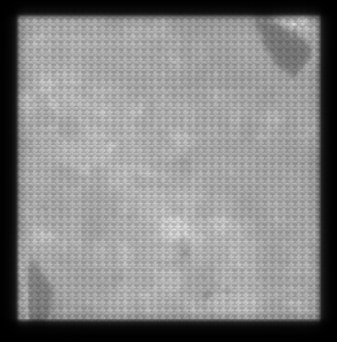
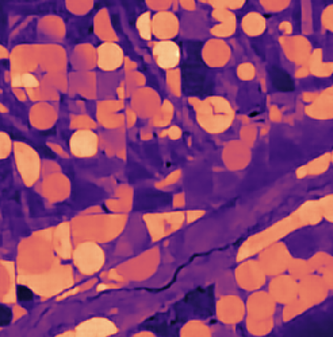

Gallery & Results
Validation Experiments: From Lab to Real-World Applications
Our technology transforms standard cameras into high-definition spectral sensors. Below are validation experiments demonstrating how Lumos diffractograms capture invisible decision-making information across industrial, medical, agricultural, and scientific fields.
Validated Performance (Optica 2025)
Our technology has been validated through rigorous peer-reviewed research, most notably in our 2025 Optica publication (“High-definition (HD) snapshot diffractive computational spectral imaging and inferencing”).
- Resolution: We have demonstrated High-Definition (HD) reconstruction at 1 Megapixel (1304×744 spatial pixels). This is a significant leap over previous snapshot spectral cameras which were often limited to very low resolutions (e.g., 64x64 or 512x512).
- Spectral Bands: The system is configurable, typically demonstrating 25+ bands in the Vis-NIR range (440–800 nm).
- Field of View (FOV): Validated with standard C-mount lenses. The system maintains spectral accuracy across the FOV, overcoming the angle-sensitivity issues (blue shift) common in Fabry-Pérot or Interference-based filters.
- Accuracy: Spectral reproduction error is consistently <15%, which is sufficient for the vast majority of classification and discrimination tasks.
1. Industrial Quality Control: Detecting Invisible Contaminants
The Challenge: In manufacturing, contaminants often look identical to the product in the visible spectrum. Traditional RGB cameras cannot distinguish them, and traditional hyperspectral cameras are too slow and data-heavy for high-speed sorting.
The Experiment: We imaged a stream of mixed plastic pellets. Half were pure, and half were “tainted” with a clear varnish invisible to the naked eye.
- RGB Camera: Failed. The pure and tainted pellets appear identical.
- Hyperspectral Camera: Succeeded, but required 15.87 MB of data per frame.
- Lumos Camera: Succeeded with just 0.37 MB per frame (a 43:1 compression ratio).
The Result: Despite the massive data compression, the Lumos diffractogram retained the distinct spectral signature of the varnish. We achieved accurate, real-time classification of the “fake” pellets matching the ground truth.
Why it Matters: This proves that high-speed optical sorting and anomaly detection can be achieved with low-bandwidth hardware, reducing infrastructure costs for factories.
2. Biomedical Imaging: Label-Free Tissue Classification
The Challenge: Distinguishing between different tissue types during surgery often requires invasive biopsies or chemical dyes. Surgeons need real-time, label-free tools to identify tissue boundaries.
The Experiment: We imaged ex-vivo chicken tissue containing both lung and trachea. While visually similar (both are pink/red tissues), they have different chemical compositions and light absorption properties.
- Method: We captured a single snapshot diffractogram and reconstructed the spectral data.
- Analysis: Using Linear Discriminant Analysis (LDA), we mapped the spectral signatures of the pixels.
- Outcome: The system successfully segmented the image, clearly differentiating the trachea (red overlay) from the lungs (green overlay) based solely on their spectral fingerprints.
Why it Matters: This validates the potential for computational staining—giving surgeons “superhuman” vision to differentiate healthy tissue from tumors or critical structures without dyes or delays.

3. Smart Agriculture: Predicting Shelf-Life
The Challenge: Visual inspection of produce is reactive—you only see rot after it has happened. Supply chains need to predict spoilage before it becomes visible to optimize routing and reduce waste.
The Experiment: We monitored 21 strawberries continuously over an 8-day period as they aged.
- Spectral Evolution: The Lumos sensor detected a decline in the “Green Peak” (chlorophyll fluorescence/reflectance) and a shift in the “Red Edge” days before the fruit appeared spoiled to the eye.
- Predictive Modeling: We trained a regression model on the reconstructed spectra.
- Outcome: The system could predict the exact age of the fruit (in days) and classify it as “Fresh” vs. “Spoiled” with high accuracy.
Why it Matters: This enables predictive quality control. Distributors can route produce based on its physiological ripeness (e.g., “sell immediately” vs. “safe to ship”), significantly reducing global food waste.

4. Astronomy: Simultaneous Multi-Band Photometry
The Challenge: Astronomers typically use filter wheels to capture stars in different wavebands (Blue, Visual, Red, Infrared). This mechanical process is slow, risks motion artifacts, and discards photons (light) at the filter.
The Experiment: We simulated a stellar field using pinholes and specific color filters (Johnson-Cousins BVRI standards) to mimic stars with different spectral temperatures.
- Snapshot Capture: Instead of rotating a filter wheel 4 times, the Lumos sensor captured all spectral data in a single snapshot.
- A Posteriori Selection: We computationally applied the B, V, R, and I transmission curves after capture.
- Outcome: We recovered accurate photometric ratios for the “stars” that matched reference measurements from a traditional spectrometer.
Why it Matters: This increases observation efficiency. Telescopes can capture multi-band data simultaneously, maximizing the utility of expensive observation time and eliminating complex moving parts.

5. Remote Sensing: “On-Orbit” Intelligence
The Challenge: Satellites generate massive amounts of hyperspectral data (Terabytes), but downlinking this data to Earth is slow and expensive.
The Experiment: We simulated a Lumos sensor in orbit using public Landsat 8 data.
- Task: Estimate the abundance (0-100%) of vegetation directly from the compressed diffractogram, without sending the full data cube to Earth.
- Method: A Deep Neural Network mapped the monochromatic diffractogram directly to an abundance map.
- Outcome: The predicted vegetation map matched the ground truth with high fidelity, but the data required to generate it was ~1000x smaller than the raw hyperspectral file.
Why it Matters: This enables direct inference. Satellites can process data on the edge and transmit only the actionable intelligence (e.g., “crop yield map”) rather than raw noise, solving the downlink bottleneck.





6. Dynamic 3D Analysis: The Rotating Avocado
The Challenge: Many spectral scanning technologies (like push-broom scanners) require the object to be perfectly still or moving on a flat belt. They fail with complex, rotating 3D objects.
The Experiment: We captured an avocado rotating on a turntable every 10 minutes for 7 days.
- Snapshot Capability: Because the Lumos technology captures the whole scene instantly (2D snapshot), it is immune to the motion artifacts that plague scanning lines.
- 4D Data: We successfully mapped the ripening process in both space (3D surface) and time.
Why it Matters: This proves the technology is robust enough for complex, dynamic environments—from tumbling fruit on a conveyor belt to drone-based inspection of moving targets.
## Publications- Apratim Majumder, Monjurul Meem, Fernando Gonzalez del Cueto, Fernando Guevara Vasquez, Syed N. Qadri, Freddie Santiago, and Rajesh Menon, “High-definition (HD) snapshot diffractive computational spectral imaging and inferencing,” Optica 12, 1539-1547 (2025). Read Paper